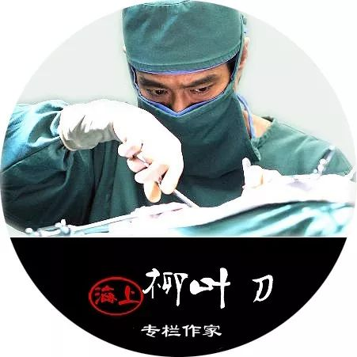
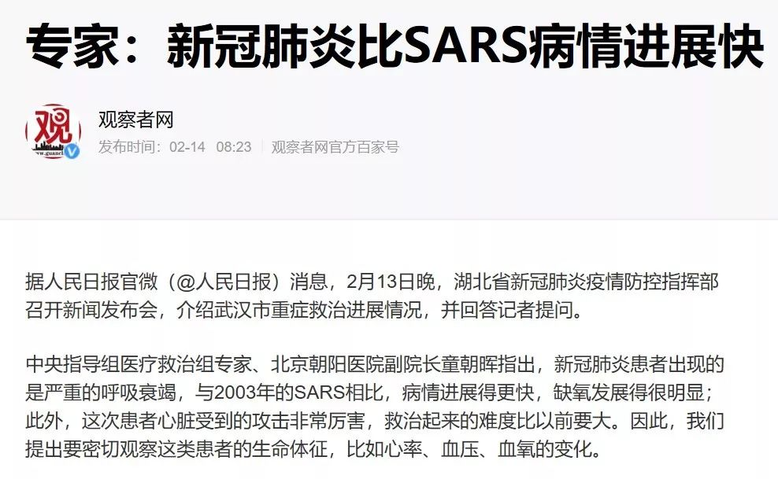
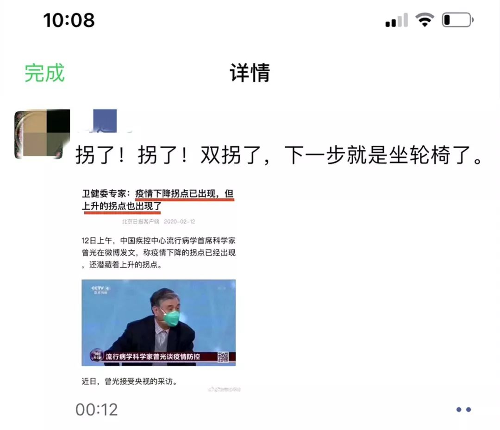
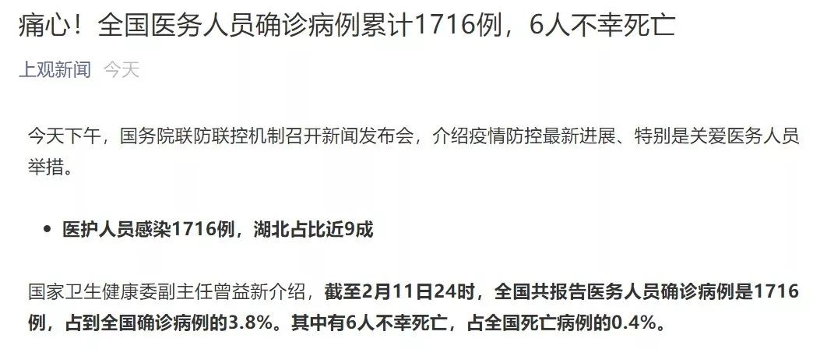
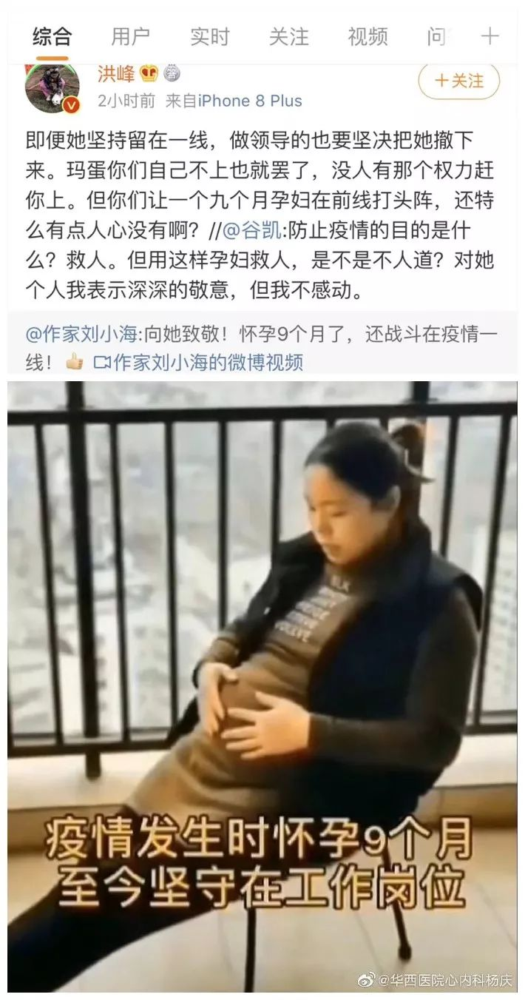

病情快速恶化的，不止李文亮
原文链接 备份链接 澎湃新闻记者 黄霁洁 实习生 陈媛媛 2月7日凌晨2点58分，武汉市中心医院眼科医生李文亮因感染新冠肺炎离世。 李文亮的离世触动了众多关切，为何原本病情平稳或好转的新冠肺炎患者，却在短期突然恶化？ 李文亮于1月10日出 …
专家门诊 | 合理用药 | 热点聚焦 | 手术日 | 医学史
专家门诊
给您权威参照

按
本文根据牛牛妈口述整理，让我们一起祈祷奇迹发生。您可以认为有些观点是一家之言危言耸听，没关系，仅供参考。但是，文末四个忠告，务请切记。

4次核酸检测，全阴……mmd，连我一个女人也忍不住爆粗口！
ps，那些说取样过程有问题的，这都是我自己取的样~~~
对，我说的就是我同事的爸爸，《最真实的人世间 | 一位武汉呼吸科医生的口述：那些和我插肩而过的生命》一文中的第8个故事。收进来一个多星期，没日没夜的治疗和护理，我们还是眼睁睁地看着他一步一步滑向危重。现在，他双肺已全白，生命只能以小时计……
截止目前，我已经给他用了两天的高流氧，效果并不太好，血氧饱和度勉强维持在80左右。如果不戴高流氧的话，只有40-50，更加危险。
我们通过一定的压力把纯氧输送给病人，可以达到纯氧的呼吸，这种方式比呼吸机的舒适度要高很多，也不经口插管，所以病人很配合。维持大概三五天之后，如果他的血氧饱和度能上升到正常范围，他也就挺过了呼吸衰竭这一关。
反之，接下来病情如果继续进展，就要上无创呼吸机，甚至气管插管接有创呼吸机。无创呼吸机是根据病人的呼吸频率来送气的，如果呼吸频率太快，呼吸机也会感应，加快送气频率，最后病人易产生呼吸肌疲劳，呼吸运动不协调，从而发生人机抵抗。
现在，这个病人呼吸频率已达40多次【注：成人呼吸频率正常值区间为12-20次/分钟 】，如果现在就给他气管插管的话，他也存在脱机困难，感染加重等等系列风险。
极危重。所以，同事哭得不行，我也崩溃中。

有些人说你们医生见惯了生离死别，怎么还会哭？好吧，问题是你见过新冠肺炎病人最后是怎么离开的吗——
急性呼吸窘迫综合征（ARDS)、肺、心脏、血管、肝、肾等器官受损……血氧测不出，心跳，血压下降……很快很快。但是直到最后几分钟，病人也全程清醒。
因为清醒，所以很多病人会呼救，会哭着喊着说医生你救救我……伴随着剧烈地挣扎，直到呼出最后一口气。
换谁在现场，能忍住这种心如刀绞和泪如雨下？
所以，我一直说这种生命的告别和溺水一样，就好比肺里面都灌满了水，活活地憋死——唯一不同的是，憋死患者的是新冠病毒导致的呈胶冻样的炎性渗出物。这个过程中，肺部换气功能完全丧失，再浓的氧也进不去血里面，但其它器官的功能还没那么快衰退，所以，痛苦且残忍。。。
让我们一起祈祷奇迹发生吧，即便这个世界上并没有那么多奇迹。
1
为什么不给危重病人气管插管？
很多读者问，你为什么不给危重病人插管。
简单来说，急性呼吸窘迫征（ARDS）的治疗分为四个步骤：第一步先高流氧治疗，不行的话就上无创呼吸机，如果上无创呼吸机两个小时无效，就要气管插管。到最后，如果有条件，就上ECMO。
但是，每一步都是有前置条件和相应标准的。
首先，从硬件配套看，进行气管插管的前提条件是要有层流病房，插管之后医护比要达到1:2~3。
我们的现状是，有气管插管的人，有呼吸机，气管插管的设备也都有，但是没有层流病房，也不可能按规范配置人力。我们医院的综合ICU里有负压层流病房，但是它只有一张单间隔离病床。毫不夸张，我们1000多张病床的三甲医院，也就只有一张床能够满足新冠病人气管插管的治疗。而之前住在里面那个病人，一直到现在都没有出院。
改建？在我的认知中，普通病房改建为层流病房要一个多星期，装那种层流消毒装置，甚至天花板都要翘开。


那如果没有这些装置硬上呢？很简单，病人插管以后，我们所有的医生、护士都会中枪。就拿简单的床旁操作“吸痰”来说吧，护士的吸痰应该很常见吧？这个操作也会有很大的感染概率，吸痰过程中病人受到刺激，一咳嗽气溶胶就直接喷出来了~~~
气管插管显然需要更大的操作空间。插管之后，那简直就是24小时不间断地喷新冠病毒气溶胶啊~~~整个房间的空气会被污染。所以，这种高风险、高暴露操作，在一般的病房是绝不允许的，这也是之前的非典留给我们血的教训。

第二，就算硬件配置到位人手充足，气管插管眼下也并非最优选择。
我只是个普普通通的一线小医生，这个观点也就仅供参考吧。现在的情况是全国最顶级的呼吸/感染和重症专家都在武汉。
但是，根据内部渠道分享的专家们最新讨论达成的指南和共识，无论是上无创和上有创呼吸机（插管），对这种病最后的逆转都没有太大的帮助。好多的病人，只要是气管插管的，基本上都是九死一生，能救活的，大概就只有10%。
所以说，大多数只要上了气管插管（有创呼吸机）就不乐观了。因为气管插管一方面会增加病人的痛苦，增加机体的刺激，同时还可能导致呼吸机相关肺炎。一旦合并呼吸机相关的细菌感染，那就真真很恐怖了，细菌加病毒一起，难上加难。
有些朋友可能会拿中南医院那个用ECMO抢救过来的病例来佐证。但是，我和同事们讨论下来，普遍认为这或只能算个案。君不见，几家专门收重症的定点医院的抢救成功率也是很低的，专家团队目前也只能保留意见，因为人力物力都投上去效果也就这样，病死率也没有降下来。所以，目前大家都还是建议能高流氧就高流氧，能不插管就不插管，尽量在最早的时间把病人先掰过来。真到了最后那一步，逆转的可能性就不大了。
2
ECMO这玩意能救多少人的命？
这个问题我们还得从ECMO是什么玩意儿说起。
ECMO本质上是一种改良的人工心肺机，最核心的部分是膜肺和血泵，分别起人工肺和人工心的作用，可以对重症心肺功能衰竭患者进行长时间心肺支持，为危重症的抢救赢得宝贵的时间。通俗点说，就是病人的肺坏了，我就搞一个人工肺来代替，跟做血透一个道理。
作为严重心肺功能衰竭最核心的支持手段，这个机器一般都是在心胸血管外科做大手术的时候要用到的，我们呼吸科一般不会轻易进这台设备，一个是比较贵，再一个用量也不大，毕竟SARS不是很常见的疾病。
这样讲大家应该能看明白——通过ECMO来治疗只是改善病人的氧合。既然肺已经完蛋了，就算通过ECMO一天一天的撑下去，最后能不能脱离这台机器又是个问题……

【近日多地殡葬工作者赴鄂支援，《半月谈》发文称：不要动不动就扯旗子！】
肺白了，之后就容易纤维化，纤维化是什么意思？它不能逆转，除非肺移植。正如李文亮走了之后，著名肺移植专家陈静瑜在朋友圈发文所言：“这几年我们收治了多例其它的病毒感染，比如腺病毒，相续又伴细菌混合感染，呼衰病危时转了ECMO, 最后经过治疗感染控制，核酸转阴，没有菌血症，但双肺纤维化实变，经ECMO 维持双肺无法逆转的病人，我们进行肺移植评估，此类病人我们团队目前己有多例肺移植长期存活的成功经验，有一位病人术前ECMO 维持最长45天后仍然肺移植长期存活。”
综上，炎性渗出物的终末结局就是机化，机化的结果就可能是纤维化。
所以，等真的进展到白肺，就算病人还可以依靠ECMO支撑十天半个月，甚至20天，45天，大概率也就是消耗，人力物力的消耗。
综上，一个是软硬件不允许，第二个是专家共识也不十分强烈推荐。所以说，我们现在不得已都用小米步枪去战斗。
3
为什么CT做出来好多双白肺？
新冠肺炎之所以可怕，除了高传染性，更重要的在于进展成重症的风险，也就是急性呼吸窘迫综合征（ARDS）。ps，SARS就是急性严重呼吸综合征的英文简称。
前面已经讲到过，新冠肺炎重症患者的死因，本质上和溺水一个道理。就好比淹死，大量的水进到了人的肺组织里面之后，把整个肺的空间占据了，所以氧进不去。
不明白的话，我们可以先来看一下肺组织的解剖结构——就像一棵“支气管树”，倒过来的，树干是主支气管，枝干是细支气管，小的枝丫是终末细支气管，叶片就是肺泡——呼吸系统最末端的呼吸单位。


肺泡有多重要？它是肺部气体交换的主要部位，为多面形有开口的囊泡。泡壁薄，直径约为200～250微米，成人肺泡约有7亿，总面积可达100米²！
相邻肺泡之间的组织称肺泡隔，其中富含毛细血管网、弹性纤维、网状纤维和胶原纤维等结缔组织。肺泡一面开口于肺泡囊及各级支气管；另一面与肺泡隔的结缔组织和血管密接，肺泡、肺泡隔和毛细血管，在医学上就称之为气血屏障，用于人体的气体交换，也就是完成肺泡里的氧与毛细血管内二氧化碳进行交换的新陈代谢。病人感染新冠病毒之后，各级气管虽然是通畅的，但是终末气道内充满了炎性渗出物，而且伴随着肺泡间隔增宽，所以氧气到达我们的血管里面的路径受阻，甚至到不了我们的血管里面去，病人就出现了呼吸衰竭。
总而言之，新冠肺炎这个疾病主要就是累及肺泡。肺泡被病毒导致的炎性渗出物，那种胶冻样的分泌物给占满了，而吸痰，靠气管镜到达不了那个终末端的地方。所以如果发展成重症，医生能采取的手段是非常有限了。
从微生物角度来说，这次的新冠病毒，包括上次的SARS都一样，都是病毒界里面能够导致急性呼吸窘迫征（ARDS）的最猛的病毒。所以，目前的治疗基本上也是按照呼吸窘迫综合征来进行的。现在没有特效药，我们医生能做的事情就是干预这个过程，干预呼吸衰竭的过程。当然，我们还要排除心、肺部的一些导致ARDS的其它的基础性疾病。

【上图截取自公众号《莲芯莲薏》】
那么还有人好奇，为什么CT做出来是白肺呢？
很简单——因为肺泡里面全部填满了这种炎性渗出物，而肺泡分布在整个肺的表面，肺的包膜下面就是肺泡，从上到下，每个部位都有，就是你能够触摸到的肺表面的那一层都是肺泡。所以说照CT的话，一看全部都是白颜色的。
讲了这么多，其实就想跟大家说这个病毒真的很厉害，千万不要大意不要放松，不要去超市挤长队不要去楼下抢白菜……牛牛妈最后四点忠告，供大家参考——
一、早诊早治，千万不要把轻症拖成重症。
二、能吃多吃，营养支持很重要，提升免疫力。
三、尽量保持积极乐观的心态，过度焦虑会影响疗效。
四、轻症需要定期复查，排除残留纤维化，避免不可逆。

【版权相关事宜，请联系刀先生】
·END·

冷静 | 专业
关键时刻派用场
微信号：SH-scalpel
原创内容 谢绝转载
刀先生（编辑）邮箱：shanghailyd@126.com
QQ:3268131491
最真实的人世间 | 一位武汉呼吸科医生的口述：那些和我插肩而过的生命
原文链接 备份链接 澎湃新闻记者 黄霁洁 实习生 陈媛媛 2月7日凌晨2点58分，武汉市中心医院眼科医生李文亮因感染新冠肺炎离世。 李文亮的离世触动了众多关切，为何原本病情平稳或好转的新冠肺炎患者，却在短期突然恶化？ 李文亮于1月10日出 …
原文链接 备份链接 _ _ _ _ 很多病人病情发展出乎意料，周新表示，虽然救治压力很大，但上海医疗队会继续坚持，力争降低病死率。 _ _ _ _ 记者 | 周 洁 除夕夜，66岁的上海市第一人民医院呼吸与危重症医学科学科带头人周新教授， …
原文链接 备份链接 不管是专家院士还是临床医生，对一个疾病的认知都有个过程 黄朝林。 图/中新网 1月19日凌晨，武汉市卫健委举行新闻发布会，针对武汉市新型冠状病毒感染的肺炎综合防控答记者问。当时，湖北省医疗组专家、武汉市金银潭医院副院 …
原文链接 备份链接 ********** *****黄冈的第一个病例是一名司机，是给武汉的华南海鲜市场运送海鲜的。**********因为业务原因，这个司机在黄冈的黄州中心菜市场逗留过。***** 黄州区人民医院的医护人员在防护服背面贴上 …
原文链接 备份链接 Original 人物记者 人物 人物 Today 在一场庞大的对抗病毒的战役中，有一部分人被置于尴尬和灰色的境地。 《人物》记者对三位新冠肺炎疫情中的透析病人家属进行了采访，一位家属说：「在这个过程中，大家永远看到的 …